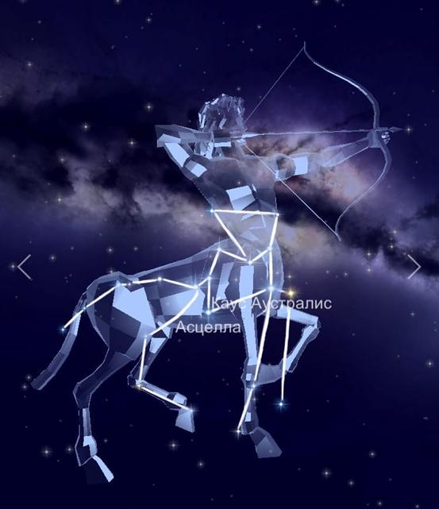

В южной небесной части располагается одно из интереснейших в зодиакальной группе созвездие Стрелец. Так как лежит в нашем Млечном Пути. К тому же, охватывает огромную площадь пространства, точнее 867 квадратных градусов. Собственно говоря, поэтому стоит на 15 месте среди всех созвездий по размеру
Миф о происхождении.
Зодиакальное созвездие Стрелец символизирует кентавра Хирона. Он был отличным лучником, музыкантом и врачевателем и был учителем Ахилла, Ясона и Геракла. Хирон, однако, был случайно ранен Гераклом. Стрела, пропитанная ядом Лернейской гидры, причинила Хирону великие страдания. Даже такой знаменитый и талантливый врачеватель, как сам Хирон, не смог вылечить себя. Бессмертный не может найти освобождение в смерти, и Хирон, в агонии, предложил себя в качестве замены Прометея. За его доброту Юпитер поместил Хирона среди звезд.
Звёзды, образующие созвездие Стрелец.
По астрономическим данным, в области наибольшее количество переменных звёзд, чем в любой другой. Кроме того, здесь находится точка зимнего солнцестояния, а также центр Млечного Пути.
Ярчайшей звездой на участке является Эпсилон — Каус Аустралис, что означает южная часть лука.
Второе место, по праву, занимает Сигма — Нунки, представляющий собой субгигант голубого цвета.
На третьем месте расположилась Дзета, именуемая Аскелла. В переводе имя обозначает подмышка.
Затем следует Дельта — Каус Медиа, что значит средний лук.
А вот Лямбда называется Каус Бореалис, то есть северный лук.
Пи — Альбалдах является тройной системой. В переводе означает город.
Гамма — Альнасл в области отмечает наконечник стрелы. Правда, относится к гигантским светилам.
Эта созвездия носит имя Сефдар и является двойной системой, которую формируют гигант и карлик.
Фи принадлежит к гигантам голубого цвета.
В то же время, Тау и Йота — оранжевые гиганты.
Омикрон и Ро Стрельца относят к двойным светилам.
Мю — Полис, что означает жеребец, многократная система.
Поскольку видимость приходится на широте от +45 до -90 градусов, то полностью область доступна для южных жителей России. А вот из центральных районов страны можно увидеть лишь часть созвездия. Но наилучшие условия отмечаются в летнее время (июнь-июль).
|

|